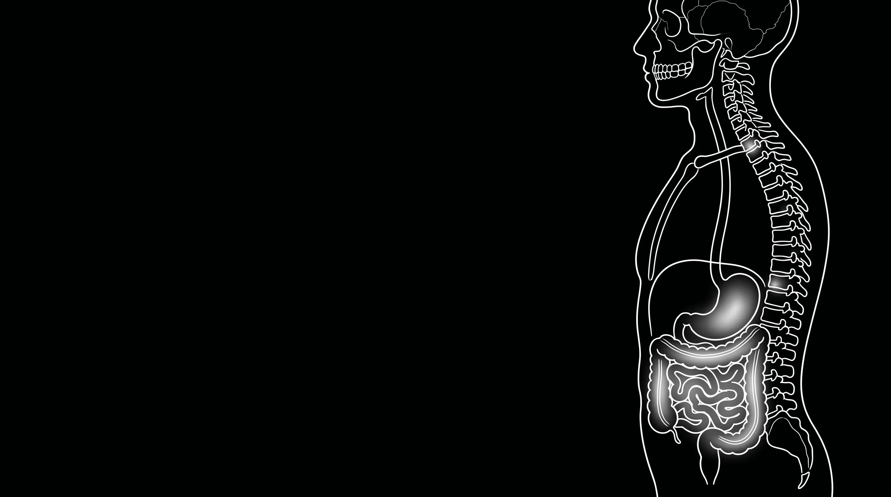
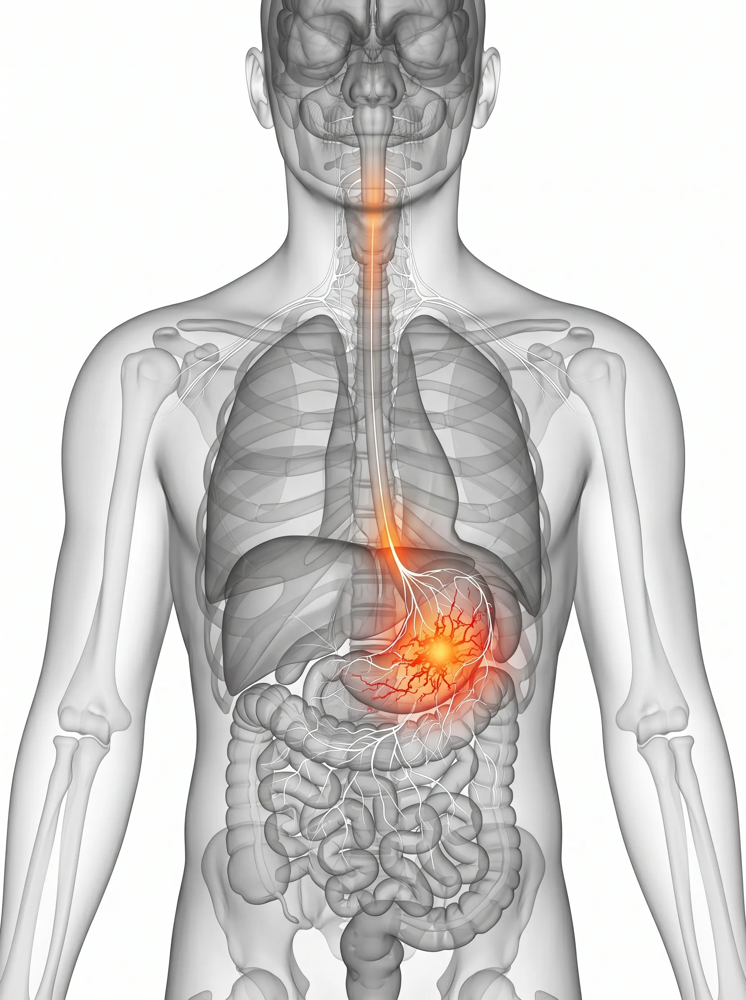

Intractable Clinic — Digestive
끊이지 않는 속 쓰림,
두 번째 뇌가 보내는 경고입니다.
위장약만으로 해결되지 않는 만성 소화불량의 본질은 무엇일까요?
위장관을 조절하는 자율신경계의 밸런스를 바로잡아,
어떤 음식을 드셔도 편안한 일상을 되찾아 드립니다.
Digestive Classification
반복되는
불편함의 양상
내시경 결과는 정상이지만 증상은 계속된다면, 위장관의 '기능적' 문제와 자율신경계의 불균형을 의심해야 합니다.
기능성 소화불량
조금만 먹어도 배가 부르거나 상복부 팽만감, 통증이 지속됩니다. 위장의 운동 기능과 감각 예민도를 조절하는 것이 핵심입니다.
과민성 대장 증후군
긴장하거나 식사 후에 갑작스러운 복통과 배변 습관의 변화가 나타납니다. 장-뇌 축(Gut-Brain Axis)의 안정이 필요합니다.
신경성 위염
스트레스 상황에서 위산 과다나 위경련 증상이 심해집니다. 과항진된 교감신경을 완화하고 소화관 혈류를 개선해야 합니다.

Vagus Nerve Pathway
Medical Insight — Digestive Autonomics
위장의 문제는,
신경의 명령 체계에서 비롯됩니다.
음식물을 분해하고 흡수하는 일련의 과정은 자율신경계의 정밀한 통제 아래 이루어집니다. 스트레스나 자세 불균형으로 자율신경이 교란되면, 위장은 물리적으로 건강하더라도 비정상적인 운동과 과민 반응을 보이게 됩니다.
행복 호르몬의 거점
신체 세로토닌의 95%가 장에서 생성됩니다. 위장 건강이 곧 마음의 건강과 직결되는 이유입니다.
자율신경 리셋
단순 소화제 처방이 아닌, 과민해진 위장 신경망을 리셋하는 것이 만성 장애 해결의 열쇠입니다.
Chronic Cycle Timeline
만성화된 위장 장애는
전신 피로로 이어집니다
식사 후의 불편함이 일상을 잠식하기 전에 개입해야 합니다.
Acute Phase
급성기
식사 메뉴에 따라 간헐적인 속 쓰림이나 더부룩함 발생. 소화제로 쉽게 호전되지만 빈도가 점차 늘어나는 시기입니다.
Functional Phase
기능저하기
약 효과가 미미해지며 상시적인 복부 팽만감, 변비/설사가 반복됩니다. 식사 자체가 스트레스가 되기 시작합니다.
Systemic Phase ⛔
전신확산기
영양 흡수 저하로 만성 피로, 브레인 포그, 근육통 등이 동반되며 체중 변화와 심리적 위축이 나타나는 고착 단계입니다.
Targeted Solution
삼성365의원 위장관 특화 3R Therapy
위장 운동을 정상화하고, 자율신경 밸런스를 되찾아 편안한 속을 만듭니다.

01
Release 이완
위장관 평활근의 긴장을 완화하고 복부 심층 유착을 해소하여 혈류 순환을 개선합니다.

02
Reinforcement 강화
장 점막의 재생력을 높이고 소화 흡수 기능을 강화하여 기초 체력을 재건합니다.

03
Reset 리셋
교란된 자율신경 밸런스를 리셋하여 스트레스와 통증의 연결 고리를 완전히 끊어냅니다.

"위장의 고요함은 곧 일상의 평온입니다. 약에만 의존하지 않는 근본적인 치료를 약속합니다."
삼성365의원 대표원장
Samsung Medical Center Specialist
Patient Consultation
자주 묻는 질문
내시경은 정상인데 왜 계속 아픈가요? ↓
내시경은 위장 점막의 '구조적' 이상을 확인하는 검사입니다. 반면 소화불량의 상당수는 위장의 운동 능력이나 신경학적 예민함 같은 '기능적' 문제에서 비롯됩니다. 삼성365의원은 이러한 기능적 불균형을 진단하고 치료합니다.
치료 기간은 얼마나 걸리나요? ↓
만성적인 경우 보통 4~8주 정도의 집중 치료 기간이 필요합니다. 자율신경계가 안정되고 위장관 조직이 재생되는 시간이 필요하기 때문이며, 환자분의 증상 정도에 따라 맞춤형 계획을 수립합니다.